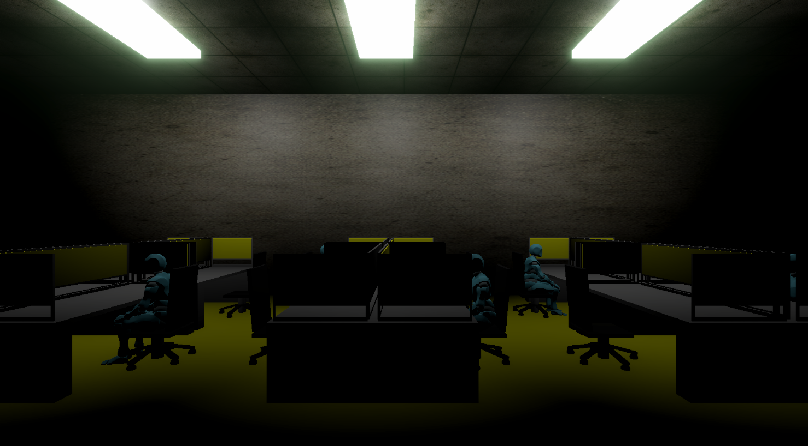
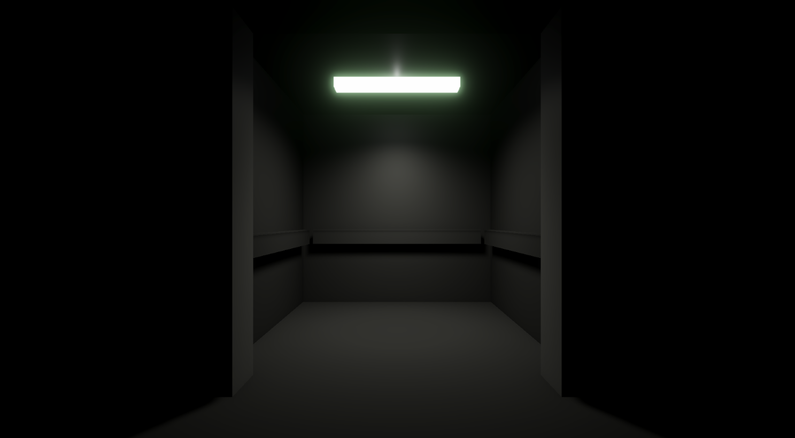

Mes projets
Jeu d’horreur à la première personne développé sous Unity. Le joueur explore un bâtiment composé de différentes zones et doit récupérer des objets clés afin de progresser et trouver une issue. Le projet met l’accent sur l’exploration, des énigmes simples et des événements scriptés visant à créer de la tension. Initialement réalisé dans un cadre scolaire, il est aujourd’hui poursuivi comme projet personnel.




J'ai participé au développement de ce jeu pendant mon stage de cet été. J'ai principalement travaillé sur le système de changement de skin du joueur.